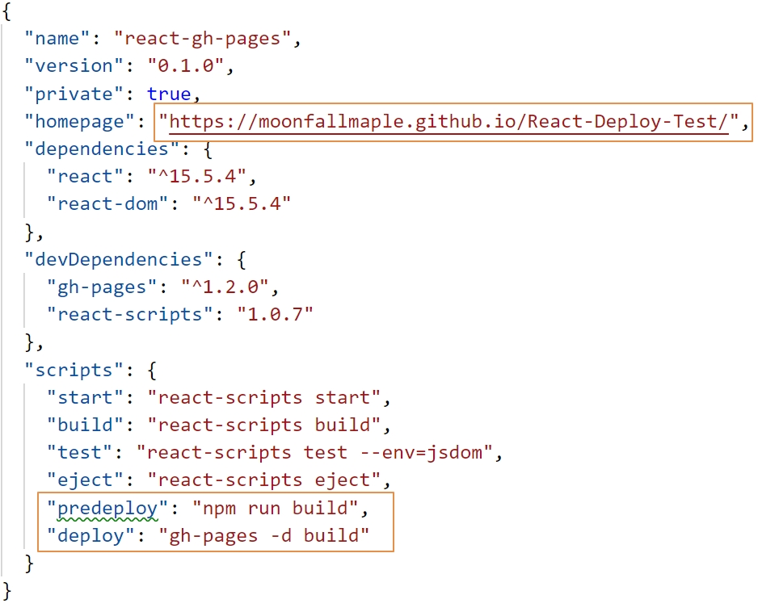

Create an empty repo at github. (No Readme, No gitignore, No license)
Create a new react app named YYY.
create-react-app YYY- open the YYY file, then install gh-pages package there
npm install gh-pages --save-dev - Edit package.json file (XXX is your Github username, YYY is your repo name)
Add property “homepage”: “http://XXX.github.io/YYY",
Add property “predeploy”: “npm run build”,
Add property “deploy”: “gh-pages -d build” (This step is to set your git-pages under gh-pages branch. )

Don’t set master branch by yourself !!!
When you add property “deploy”: “gh-pages -d build” to package.json, you already create a git-page and set it under gh-pages branch.

Initialize git in YYY file
git initSet your remote git repo location
git remote add origin https://github.com/XXX/YYY.gitif remote repo already exists
git remote rm originDeploy
npm run deploy
If you want to deploy react & react router to gitpage: need to add basename={process.env.PUBLIC_URL} to BrowserRouter
ReactDOM.render(
<Provider store={store}>
<BrowserRouter basename={process.env.PUBLIC_URL}>
<App />
</BrowserRouter>
</Provider>
,document.getElementById('root'));